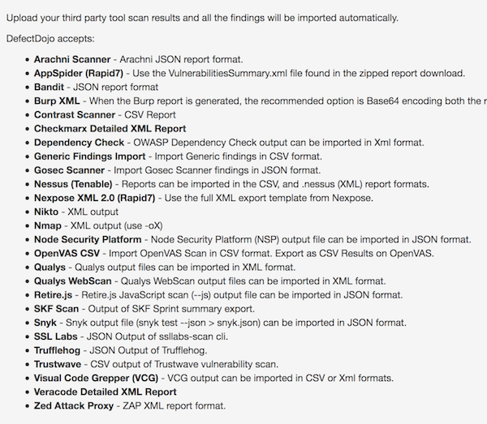

Iron Flower, Mar 2019
One Orchestrator One Dashboard
-- Introduction
I've written a summarized blog about my experiences till now while working with automated vulnerability scanners in development pipelines. My goal was to have a solution that is customizable, scalable, mostly open-source and didn't require much resources.
Ideally I want to have one central place to configure all scanners and one central place to display all vulnerabilities.
-- The Orchestrator
For the orchestration part I decided to go with Jenkins because of my previous experiences and the features it provides to scale and customize with plugins etc.
From my past experiences I know that running multiple scanners (as services) at once will overload the VM which will cause delay or even stop scans. That's one of the reasons I decided to use dockerized versions of scanning tools to execute the scans. Once the scan is finished, I would simply remove the docker instance. I've summarized the whole process in the diagram below.
-- Configurations
I found docker images of different types of popular tools which I used to scan websites with. Below are some example configurations you could use. I simply created a timed job for each target in Jenkins which would periodically execute these configurations.
// OWASP ZAP
OWASP ZAP is fully dockerized and can be found here
I forked the existing configuration from Stephen Donner and modified it slightly to meet my needs. It can be found here. You can export the results of OWASP ZAP in a variety of different outputs.
CONTAINER_ID=$(docker run -u zap -p 2375:2375 -d owasp/zap2docker-weekly zap.sh -daemon -port 2375 -host 0.0.0.0 -config api.disablekey=true -config scanner.attackOnStart=true -config view.mode=attack -config connection.dnsTtlSuccessfulQueries=-1 -config api.addrs.addr.name=.* -config api.addrs.addr.regex=true)
# the target URL for ZAP to scan
TARGET_URL=$1
docker exec $CONTAINER_ID zap-cli -p 2375 status -t 120 && docker exec $CONTAINER_ID zap-cli -p 2375 open-url $TARGET_URL
docker exec $CONTAINER_ID zap-cli -p 2375 spider $TARGET_URL
docker exec $CONTAINER_ID zap-cli -p 2375 active-scan -r $TARGET_URL
docker exec $CONTAINER_ID zap-cli -p 2375 alerts
# docker logs [container ID or name]
divider==
printf "\n"
printf "$divider"
printf "ZAP-daemon log output follows"
printf "$divider"
printf "\n"
docker logs $CONTAINER_ID
# export html or xml report
case $2 in
--xmlreport ) echo "printing xml report"
wget -O report.xml 172.17.0.1:2375/OTHER/core/other/xmlreport/?formMethod=GET
;;
* ) echo "printing http report"
wget -O report.html 172.17.0.1:2375/OTHER/core/other/htmlreport/?formMethod=GET
;;
esac
// SSL Labs
As with ZAP, Qualys' SSL scanner is also dockerized and can be found here.
I simply use the command below to periodically check websites for SSL configuration. I export the results to json and will show lateron how to export it to a dashboard.
docker run --name foo jumanjiman/ssllabs-scan https://foo > sslres.json
-- The Dashboard
The configuration of Jenkins and the scanners are the easy part. Next step was to find a dashboard which could import all the different findings and outputs (in different formats) and display them in one structured overview. Important keywords here are: false positive flagging, duplicate surpressing, accepting findings.
At first I tried the open-source version of Threadfix but noticed some major fallbacks. Most of the time it didn't correctly import findings from various tools which resulted in findings to be missed. Also sometimes once a finding is flagged as false positive it would return back in the dashboard when the next scan was imported. Then someone advised me to look into Defect Dojo. At first Defect Dojo can seem quite overwhelming due to the fast amount of features, but once you get to know it, you wouldn't want to go back to anything else! Defect Dojo does all of the above things and more and has a sufficient REST API.
One of the things I like about Defect Dojo is the integration support for default outputs of many popular scanners.

After the scans are finished, Defect Dojo's REST API can be used to automatically import reports into its dashboard. This can be achieved in many different ways. I used a simple curl command within the Jenkins job to push the report to Defect Dojo once the Docker container/scanner is stopped. I've put some examples below.
Goes without saying that before you're able to import findings you need to create a project within Defect Dojo as wel as other configuration options. Check out their docs for more.
// OWASP ZAP
time=$(date +'%Y-%m-%d')
curl -i -F "file=@report.xml" -H "Authorization: ApiKey jenkins:foo" -F 'scan_type=ZAP Scan' -F 'tags=apicurl' -F 'verified=true' -F 'active=true' -F scan_date=${time} -F 'engagement=/api/v1/engagements/2/' http://127.0.0.1:8000/api/v1/importscan/
// SSLabs
time=$(date +'%Y-%m-%d')
curl -i -F "file=@sslres.json" -H "Authorization: ApiKey jenkins:foo" -F 'scan_type=SSL Labs Scan' -F 'tags=apicurl' -F 'verified=true' -F 'active=true' -F scan_date=${time} -F 'engagement=/api/v1/engagements/1/' http://127.0.0.1:8000/api/v1/importscan/
The findings are filtered and displayed within the dashboard of Defect Dojo.
// False positives and duplicates
I saved the best for last. Anyone who works with security automation solutions in pipelines knows the pain of re-occuring false positives and duplicate findings of daily scans. In the past I would try to filter out false positives on the scanner side. This works fine if you have one scanner and two websites to scan but if you want to scale up this becomes unfeasible.
One of the finest features Defect Dojo offers is a (working!) false positive removing option which after a finding is flagged as a false positive won't return in the dashboard eventhough the scanners keep reporting this finding.
The 'de-duplication' feature of Defect Dojo makes life also a lot easier. It (automatically!) detects duplicate findings from different reports and filters these out. Next time a scanner reports the same finding Defect Dojo will simply ignore it!
-- Conclusion
The frame is now built. From now on you can simply expand your solution by adding more supported scanners to Jenkins jobs. You can expand with Nmap or Nessus for infrastructure scans as wel as using other web application scanners.